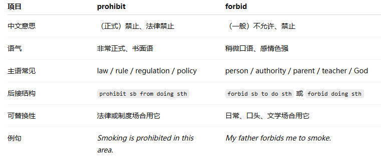
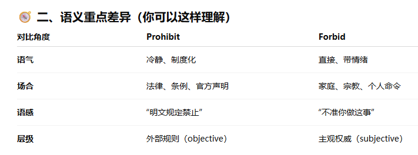
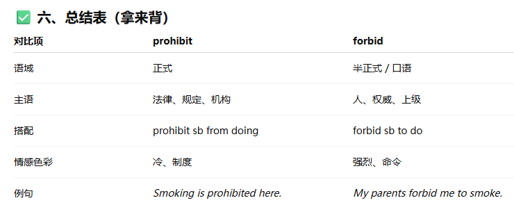
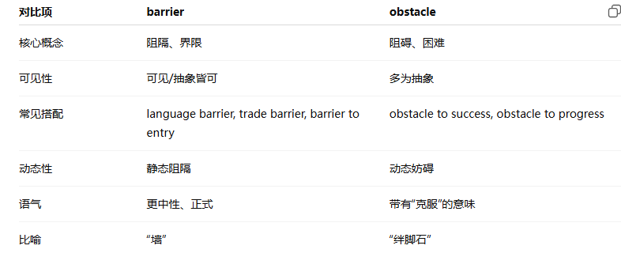

共 50 个词条 · 4 张附图（含音标截图）
inherit /ɪnˈher.ɪt/ v.继承;遗传
He inherited many good qualities from his parents, including diligence(/ˈdɪl.ɪ.dʒəns/ n.勤奋，认真。diligent adj认真刻苦的，勤奋的，勤劳的) and community spirit.他继承了父母的许多优秀品质，包括勤奋和社区精神。
an inherited disease 遗传病
Shipbuilding in ancient Rome, however, was more of an art relying on estimation（/ˌes.tɪˈmeɪ.ʃən/估计;判断;看法, （费用、尺寸、价值等的）估计，估测）, inherited techniques and personal experience.但是在古罗马，造船更像是一门依托于估算、技术传承与个人经验的艺术。
sway /sweɪ/ v.摇摆，摇晃;说服 n.摇摆;影响
Your arguments do not sway her: she is insistent(/ɪnˈsɪs.tənt/ adj.坚持的；坚决要求的; insist vi.坚持，强调;坚决要求) on leaving你的观点打动不了她，她坚持要离开
sway in the wind 在风中飘摇
The work of the philosopher(/fɪˈlɒs.ə.fər/哲学家) and scientist Aristotle, in the fourth century BC, is especially noteworthy, as his ideas held sway for nearly 2,000 years哲学家和科学家亚里士多德在公元前4世纪的这一著作格外值得关注，因为他的思想已经影响了人们接近2,000年
philosophy 哲学 philosophy
calculate v.计算;预测，估计
He calculated that he could afford to buy a new car if he saved 30% of his salary each month.他计算得出，如果每个月把工资存下30%，就能买得起一辆新车。
calculate how much time the assignment will take算一下花多少时间完成分配的任务
calculation n.计算
He witnessed(/ˈwɪt.nəs/（尤指犯罪或事故的）目击者，看到;目睹，见证人;连署人，（法庭上的）证人) a Venus transit but was unable to make any calculations.他见到了金星凌日现象，但并没能进行任何计算。
rational /ˈræʃ.ən.əl/ adj.合理的;理性的
He was too upset about the situation to think in a rational way他对这种情况感到太沮丧了，以至于无法理智地思考。
a rational argument 一个合理的论点
harness /ˈhɑː.nəs/ v.控制，利用;用马具;n.马具;保护带 老师说，马具，保护带就是用于control的
They planned to harness the power of the sea to generate electricity.他们计划利用海洋的力量来产生电能。
a safety harness 安全带
equator /ɪˈkweɪ.tər/ n.赤道
Countries that lie south of the equator tend to be hotter and are often home to many fascinating (/ˈfæs.ən.eɪ.tɪŋ/极有趣的;吸引人的) plants and animals.位于赤道以南的国家往往更加炎热，这里通常是许多迷人的植物和动物的家园。
near the equator 位于赤道附近
equal adj.相等的
equation n.等式，方程式
authentic /ɔːˈθen.tɪk/ adj.真正的;真实的;可信的
I don't know if the painting is authentic or an excellent fake我不知道这幅画是真迹还是优质的仿品。
an authentic account(报道;报告;记述;描述) of life in the desert 对沙漠生活的真实描述
inauthentic adj.不真实的，假的
ceramic /səˈræm.ɪk/ n.陶瓷制品，陶瓷器 adj. 陶瓷的
The delicate(脆弱的；娇嫩的 ，需要小心处理的) ceramic vase in the exhibition hall was an exquisite(/ɪkˈskwɪz.ɪt/精美的;精致的;优雅的，（感觉）剧烈的，强烈的；（品质）完美的，卓越的) work of art.展厅里那只精美的陶瓷花瓶是一件精美的艺术品。
a collection of Chinese ceramics 中国陶瓷收藏品
a ceramic bowl 一个瓷碗
辨析 ceramic 与 pottery（pottery 在第21章）：
pottery n.（通常不可数）
含义：黏土成型再烧硬的陶器；也指制陶这门手艺。
侧重：器皿，以及“做陶”这件事。不能单独作形容词。
常见搭配：a piece of pottery；pottery class；Chinese pottery
ceramic n./adj.
含义：陶瓷制品；陶瓷的。
侧重：材料本身。范围更大，陶器、瓷器、瓷砖、工业陶瓷都包括。
常见搭配：a ceramic bowl；Chinese ceramics；ceramic tiles
核心区别一句话
pottery = 陶，以及做陶
ceramic = 陶瓷这一大类（pottery 只是其中的陶）
瓷器叫 porcelain，属于 ceramic，一般不叫 pottery。考古语境里 pottery 常统称各类陶容器。
succumb /səˈkʌm/ v.屈服，屈从;病情加重
Despite his best efforts, he couldn't resist(抵抗;忍耐) the temptation（引诱，诱惑） and eventually succumbed to it.尽管他尽了最大努力，但还是抵挡不住诱惑，最终屈服了。
succumb to the temptation 经不住诱惑
imitate /ˈɪm.ɪ.teɪt/ v.模仿;仿造
Some people say that the best way to learn excellent pronunciation is to imitate what native speakers say and how they say it.有些人说，学习地道发音最好的方法是模仿母语人士说什么以及如何说。
provide a model for children to imitate 给孩子提供了模仿的范例
imitation n.模仿
辨析 imitate 与 mimic：
| 对比点 |
imitate |
mimic /ˈmɪm.ɪk/ |
| 释义 |
模仿；仿效；仿造 |
模仿（尤指言行举止）；学样；也可作名词：善于模仿的人 |
| 范围 |
更广、更中性：行为、风格、发音、艺术手法、产品仿造都可用 |
更具体：常指学某人说话、动作、神态；也可指效果/功能上“像”（如药物 mimic 激素） |
| 语气 |
中性；认真学习、以某人为榜样时常用 |
常带逗乐、戏仿甚至嘲弄；科学语境里可完全中性 |
| 搭配 |
imitate sb's style / pronunciation；imitate a painting；children imitate adults |
mimic sb's accent；mimic the teacher；a drug that mimics…；a gifted mimic |
| 一句话 |
跟着学 / 以…为榜样 |
惟妙惟肖地学样（常为逗乐） |
herb /hɜːb/ n.药草，香草;草本植物
She added fresh basil(/ˈbæz.əl/罗勒（烹饪中用于调味的香草）), a fragrant(/ˈfreɪ.ɡrənt/芳香的，芬芳的) herb, to enhance the flavour of the pasta sauce她加入了新鲜的罗勒，一种芬芳的香草，以增强意大利面酱的味道。
an herb garden 药草园
aromatic (/ˌær.əˈmæt.ɪk/有香味的，有香气的，芳香的)herbs 草本香料植物
negative adj.消极的;否定的
The experience was challenging, but certainly more positive than negative这段经历具有挑战性，但肯定积极作用大于消极影响。
a fairly /ˈfeə.li/相当地；一定程度地，（用于强调比喻性表述）简直，公平地；公正地）negative attitude to the theory 对该理论相当消极的态度
positive adj.积极的
process n.过程;进程;步骤v.加工;处理
Applying for a new visa is a long and sometimes painstaking(/ˈpeɪnzˌteɪ.kɪŋ/认真仔细的，精心的，费尽心思的) process, and you need to have all the right documents.申请新的签证是一个漫长的、有时很辛苦的过程，你需要准备好所有需要的文件。
the mental processes 思维过程
the ageing process 老化过程
make Ai's decision-making process easier to comprehend让人工智能的决策过程更易于理解
dedicate /ˈded.ɪ.keɪt/ v.致力于;奉献于
She dedicated the final song at the performance to her family她把演出中的最后一首歌献给了自己的家人。
dedicate her life to scientific studies 献身于科学研究
devote v.奉献
dedication n.奉献，献身
易混：delicate /ˈdel.ɪ.kət/ adj.精美的;精密的;易碎的;纤弱的;娇嫩的;需要小心处理的
两个词拼写很像，别混：dedicate（动词）= 奉献 / 致力于；delicate（形容词）= 精致 / 娇弱 / 易碎。音也不同：dedicate 重音在第一音节且结尾是 /keɪt/；delicate 结尾是轻读 /kət/。
widespread /ˌwaɪdˈspred/ adj.普遍的，广泛的;分布广的
David gained widespread popularity（/ˌpɒp.jəˈlær.ə.ti/流行，人气，关注） after he appeared on national television as the winner of the contest（/ˈkɒn.test/比赛;竞赛）. David作为比赛胜出者出现在国家电视台后，获得了广泛的关注。
widespread damage 广泛的损坏
widespread support 广泛的支持
spread 扩散，蔓延 ，涉及区域;范围，整版（或横贯几版的）文章（或广告）
postcode /ˈpəʊst.kəʊd/ n.邮政编码 老师说，听力里面的邮编一定要会听
A postcode allows the mail to be sorted more quickly and efficiently邮政编码可以使邮件被更快速、更高效地分类。
type your street address and postcode 输入街道地址和邮政编
displace /dɪˈspleɪs/ v.取代;置换;转移;免职
Many people believe that physical, printed books will be soon completely displaced by electronic devices and tablets许多人认为实体纸质书将很快被电子设备和平板电脑完全取代。
displaced workers 被辞退的工人
monument /ˈmɒn.jə.mənt/ n.纪念碑;历史遗迹;不朽作品
A monument dedicated to the saint(/seɪnt/（基督教教会，尤指天主教教会正式追封的）圣徒，圣者;圣徒头衔（圣徒的名字有时用作地名或建筑物的名称）圣人般的人，至善的人，道德高尚的人) was erected(/ɪˈrekt/建立;建造，竖立;使直立) in the centre of the city.纪念伟人的纪念碑矗立在市中心。
an ancient（/ˈeɪn.ʃənt/古老的） monument 古代遗迹
monumental adj.不朽的;纪念碑的
the intricately(/ˈɪn.trɪ.kət.li/错综复杂地，复杂精细地) carved monument 雕刻精致的纪念碑
concise /kənˈsaɪs/adj.简明的，简洁的
It's important to write a concise overview when you write a short essay（/ˈes.eɪ/（尤指学生写的作为课程作业的）短文;论说文;小品文，散文，企图；尝试） in an examination.当你在考试中写一篇短文时，写一个简洁明了的概述是很重要的。
a concise summary 简明扼要的总结
clear concise instructions 言简意赅的说明
redundant adj.多余的;冗长的
complex adj.复杂的
concisely adv.简明地;简洁地
disturb /dɪˈstɜːb/ v.打扰;妨碍
He really couldn't study when there was a lot of noise or distractions(/dɪˈstræk.ʃən/心烦意乱，苦恼无聊，分心的事；分散注意力的东西，娱乐，消遣) that disturbed his concentration.当有很多噪音和干扰来分散注意力时，他真的无法学习
disturb the sleeping patients 惊扰睡着的病人
turbine /ˈtɜː.baɪn/ n.涡轮机
undergo /ˌʌn.dəˈɡəʊ/ v.经历，经受;忍受
He had to undergo surgery（/ˈsɜː.dʒər.i/手术） for his cardiovascular（/ˌkɑː.di.əʊˈvæs.kjə.lər/心血管的） issue他因心血管问题不得不进行手术治疗。
undergo repairs 接受检修
Theme (/θiːm/注意发音，（谈话、书籍、电影等的）题目，主题，（电影等的）主题歌，主题曲)parks are undergoing other changes, too, as they try to present more serious social and cultural issues, and move away from fantasy（/ˈfæn.tə.si/幻想；想象，魔幻故事；奇幻文学）.主题公园也在发生其他变化，因为它们期望呈现更加严肃的社会和文化问题，而不再仅仅关注虚幻的事物。
desperate /ˈdes.pər.ət/adj.不顾一切的;绝望的 非常严重的；非常糟糕的
He had spent months looking for a job and was beginning to get desperate他已经花了几个月时间找工作，并且开始感到绝望。
face a desperate shortage of clean water 面临清洁水源的严重短缺
Bingham made desperate attempts to prove this belief(/bɪˈliːf/相信；信心；信任，信仰；信念；看法) for nearly 40 years. Bingham在将近40年的时间里用尽一切方法试图证明他的观点。
destination /ˌdes.tɪˈneɪ.ʃən/ n.目的地，终点
It took many hours for him to get there after the long journey, but finally he arrived at his destination, exhausted, relieved and very happy.经过长途旅行，他花了好几个小时才到达那里，但最终他到达了目的地，筋疲力尽，如释重负，非常高兴
arrive at the destination 到达目的地
tourist destination 旅游目的地
Large merchant ships would approach the destination port and, just like today, be intercepted (拦截，截住)by a number of towboats that would drag them to the quay(/kiː/驳岸，码头).和现在一样，大型商船在靠近目标港口的时候会由一些牵引船拖进码头。
censor /ˈsen.sər/ v.审查;检查 n. （书籍、电影等的）审查员，审查官；（尤指战时或监狱中私人书信的）检查员
Many television companies censor out bad language for the sake(因为;为了，为了（某人）的利益；为了帮助（某人）) of children.许多电视公司为了儿童的利益而删减不良语言。
censor the news 对新闻报道进行审查
censorship n.审查;审查制度
sensor /ˈsen.sər/传感器
twist /twɪst/ v.弯曲;扭动，拧;旋转n.转动，扭动
The story was particularly interesting because of the surprising twist at the end.由于故事结尾令人意外的反转，这个故事非常有趣
twist her arms behind her back 把她的胳膊扭到背后
symbol /ˈsɪm.bəl/ n.象征;符号;标志
Making the letter V with your fingers is seen as a symbol of victory or peace用手指比出字母V被视为胜利或和平的象征。
the chemical symbol for copper 铜的化学符号
symbolic /sɪmˈbɒl.ɪk/ adj.象征的;象征性的
silt n.淤泥，泥沙v.(使)淤塞
The river carried fine particles(/ˈpɑː.tɪ.kəl/微粒，粒子) of silt, depositing (/dɪˈpɒz.ɪt/留下;存放，支付（押金、定金或预付款），押金，存款，沉淀物，沉积物)them along its banks.河流带着泥沙颗粒，沿着河岸沉积下来。
silt up 淤积
acid n.酸 adj.酸的;酸性的
Be careful not to spill the acid; it can be hazardous(/ˈhæz.ə.dəs/危险的)小心不要把酸洒出来，这可能很危险。
acid rain 酸雨
matrix n.矩阵;模型;发源地
The diagram was drawn in the form of a matrix to show the relationship of elements.这张图是以矩阵的形式画出的，以体现元素间的关系。
a matrix of paths 纵横交错的小路
the matrix of their culture 他们文明的发源地
assert /əˈsɜːt/v.坚持;断言;主张;声称
She tried to assert herself and get him to understand her point of view.她试图说明自己的观点，并获得他的理解。
assert my authority (/ɔːˈθɒr.ə.ti/ n.权威;权力;当局)from the beginning 一开始就维护我的权威
prey n.猎物，捕获物;受害者v.捕食;欺凌
The predator (/ˈpred.ə.tər/ n.捕食者;食肉动物;掠夺者)silently stalked(/stɔːk/ vt.跟踪，悄悄地靠近（猎物或人），n.（植物的）茎，杆;（叶或果实的）柄，蒂;（花）梗) its prey through the dense jungle foliage.捕食者在茂密的丛林中安静地跟踪猎物。
easy prey for birds 容易被鸟类捕食
The creatures that particularly interest us are the many insects that secrete （/sɪˈkriːt/（动植物或其细胞）分泌，隐藏；隐匿）powerful poison for subduing(/səbˈdʒuː压制；制服；控制) prey and keeping it fresh for future consumption.令我们非常感兴趣的生物是一些昆虫，它们分泌强力的毒药来捕杀猎物并使其保持新鲜以备之后食用。
pray祈祷
secret 秘密 secrete分泌
certificate n.证书;执照;文凭
To apply for a place at the college you must supply your original degree certificates and complete the online application form.为了申请该学院的一个席位，你必须提供学位证书原件并填写在线申请表。
a birth certificate 出生证明
certification n.证明
prohibit v.阻止，禁止
Most countries have prohibited smoking in public places in an effort to promote a healthier population.大多数国家都禁止在公共场所吸烟，以促进人口健康。
prohibit many people from taking up this sport令许多人放弃从事这项运动
forbid v.禁止
prevent v.防止;阻止



associate 英/əˈsəʊ.si.eɪt/，美/əˈsoʊ.ʃi.eɪt/ v.联想;联系adj.联合的;副的，将…（与…）联系起来，把…联系在一起，朋友;同事;（生意）伙伴
My mother doesn't really like the kinds of people I associate with.我妈妈不喜欢我交往的那类人。
associate with与......联系
dissociate v.否认关系;与.....无关
association n.联系:联盟
confine /kənˈfaɪn/ v.限制，局限 n.边界;限制
Can we please confine our discussion to the central matter in question? 我们能不能把讨论集中在问题的核心上?
be confined to the Glasgow area 局限于格拉斯哥地区
restrict v. 限制
compound 英/ˈkɒm.paʊnd/ ，美/ˈkɑːm.paʊnd/ n.化合物混合物 adj.复合的;混合的v合成;混合
You should first understand the distinction between compound interest and simple interest.你应当首先理解复利和单利的区别。
organic compounds 有机化合物
attain /əˈteɪn/ v.达到，实现;获得 这个等于reach和get的合体
True happiness is difficult to attain just through money alone.仅仅靠金钱是很难获得真正的幸福的。
attain my pilot's licence 拿到我的飞行员执照
attainable adj.可达到的;可得到的
retail /ˈriː.teɪl/ n./v. 零售 adv. 以零售方式
There are hundreds of different retail outlets(/ˈaʊt.let/零售网点；经销点；专卖店) near our office我们办公室附近有数百家不同的零售店。
department(/dɪˈpɑːt.mənt/（组织或机构中的）部，系，处，科，室) stores and other retail outlets百货商店和其他零售专营店
retailer n.零售商;零售店
department store是一个固定搭配，表百货公司，综合性商店
interior /ɪnˈtɪə.ri.ər/ n.内部;本质 adj. 内部的;本质的
The interior of the hotel was designed in the style of a European Renaissance(/rəˈneɪ.səns/（15和16世纪时欧洲，尤指意大利北部的）文艺复兴，文艺复兴时期,（尤指艺术、文学或音乐的）复兴) palace.酒店的内部设计带有欧洲文艺复兴时期宫殿的风格。
an expedition（/ˌek.spəˈdɪʃ.ən/远征;探险，考察，考察队;探险队） into the interior of Australia一次深入澳大利亚腹地的探险
the interior of a building 楼房的内部
exterior （/ɪkˈstɪə.ri.ər/）adj.外部的
interior designer 室内设计师
deforestation /diːˌfɒr.ɪˈsteɪ.ʃən/ n. 滥伐森林
Deforestation has resulted in significant damage to the natural environment and impacted the ecosystem.森林砍伐给自然环境带来了巨大危害并影响了生态系统
a history of deforestation 森林砍伐的历史
deforest 大面积砍伐森林;人为毁林
wax /wæks/ n.蜡;蜡烛 v.给...上蜡
She carefully applied a layer of wax to her car to protect the paint and give it a glossy (/ˈɡlɒs.i/平滑有光泽的，（书、杂志）用高级亮光纸印刷的)shine.她仔细地在车上涂了一层蜡，以保护车漆，使其闪闪发光
floor wax 地板蜡
wax polish（/ˈpɒl.ɪʃ/擦，擦亮，抛光，上光剂，擦光油；波兰的;波兰人的;波兰语的，波兰语） 上光蜡;蜡光剂
acclaim /əˈkleɪm/ v./n.称赞; 欢呼
The conference that they hosted was acclaimed as a considerable(/kənˈsɪd.ər.ə.bəl/相当大的；相当多的；非常可观的；相当重要的) success, after receiving much academic praise(赞扬，称赞)他们主办的会议在获得了许多学术赞誉后，被誉为一次相当成功的会议。
a highly acclaimed performance 受到高度赞扬的表现
seep /siːp/ v./n.渗透; 渗漏
Water began to seep through the cracks in the old, worn-out(不能再用的；耗尽的), Wooden bucket水开始从那只破旧木桶的裂缝里渗出来。
an oil seep 一次石油渗漏
temporary /ˈtem.pər.ər.i/ /ˈtem.prər.i/ adj.暂时的，临时的
He decided to take on a temporary job after finishing university, just to earn a little money.他决定大学毕业后找一份临时工作，只是为了赚点钱。
a temporary agreement 一份临时协议
barrier /ˈbær.i.ər/ n.障碍物，屏障;界线 ；检票口
Problems with finding childcare are the biggest barrier to women in Sweden finding work.寻找儿童托管的问题是瑞典女性寻求工作的最大障碍。
stand behind barriers 站在障碍物后面
These barriers don't just make it harder to cross the road: they divide communities and decrease opportunities for healthy transport.这些路障并不仅仅是令过马路这件事本身更困难:它们还将不同人群划分开来，并降低了健康交通出行的机会。
辨析 barrier 与 obstacle：
barrier n.
含义：挡住去路或把两边隔开的障碍物、屏障、界线；也可指检票口。
侧重：像墙、栏杆一样“挡住 / 隔开”。既可指实体路障，也可指抽象阻隔（语言、贸易、文化）。
常见搭配：a barrier to …；language / trade barrier；break down barriers；stand behind barriers；ticket barrier
obstacle /ˈɒb.stə.kəl/ n.
含义：前进路上妨碍达成目标的障碍。
侧重：路上要跨过去、绕过去、克服掉的那块“绊脚石”，强调妨碍进步。
常见搭配：an obstacle to …；overcome obstacles；put obstacles in sb's way；obstacle course
核心区别一句话
barrier = 挡住 / 隔开的屏障
obstacle = 前进路上要克服的障碍
路中间的水泥墩、检票闸机更常叫 barrier；求职、学习中遇到的困难更常叫 obstacle。两者有时都能用，但 barrier 更突出“隔开”，obstacle 更突出“妨碍达成目标”。

magnetic /mæɡˈnet.ɪk/ adj.有磁性的;有吸引力的
Researchers applied a powerful magnetic field to extract (取出;拔出;提取，强索;设法获取)tiny metal fragments from the sample.研究人员用强磁场从样本中提取微小的金属碎片。
magnetic materials 磁性材料
magnetic field磁场
concrete /ˈkɒŋ.kriːt/ adj. 具体的; 混凝土的 n.具体物; 混凝土
He had a very concrete （具体的，注意，这个不是坚固的）goal in mind and was determined to achieve it.他心中有一个非常具体的目标，并决心实现它。
concrete floor 混凝土地面
abstract adj.抽象的
Teaching concrete skills such as how to write an effective introduction to an essay （/ˈes.eɪ/（尤指学生写的作为课程作业的）then praising students' effort in getting there is probably a far better way of improving confidence than telling them how unique they are, or indeed（的确，实在，确实，当然，甚至，而且） how capable they are of changing their own brains.教授具体的技能，例如怎么写出一篇论文的精炼简介，然后再夸奖学生努力达成了目标，这可能在提升学生自信方面是更好的做法，远远优于去告诉学生他们多么与众不同或多么有能力改变他们自己的大脑这类行为。
supervise /ˈsuː.pə.vaɪz/ v.监督;管理;指导 老师说：super=up, vise=see看，从上面看
One of the senior students was asked to supervise the class while the teacher was taking a one-day training course当老师参加为期一天的培训课程时，一个高年级学生被要求监督这个班。
supervise building work 监理建筑工程
supervision n.监督;管理
supervise and support library staff 管理和帮助图书馆工作人员
script /skrɪpt/ n.脚本;剧本;笔迹v写脚本;写剧本
Movie actors usually have to memorise their script before going on camera and acting.电影演员在拍摄和表演前通常要记住他们的剧本。
an error in the original script 最初脚本中的错误
recreation /ˌrek.riˈeɪ.ʃən/ n.娱乐;消遣
There are excellent facilities for sport and recreation in my city.我所在的城市有很好的体育和娱乐设施。
the increasing use of land for recreation 越来越多的土地用于娱乐
recreational adj.娱乐的;消遣的
Well, since we managed to extend the recreation ground we've spent some time talking to local people about how it could be made a more attractive and useful space既然我们设法扩建了游乐场，我们也就花了一些时间和当地人讨论如何使它成为一个更有吸引力和更有用的空间。
词源：为什么 recreation 不是“重制 / 再创造”？
按字面拆：re-（再一次）+ creation（创造），很容易理解成“重新做出来”。但 recreation 走的是另一条词义路线。
它来自拉丁语 recreare：re- + creare，在拉丁语里本义是 refresh, restore, revive, invigorate —— 使人恢复、振作、重新有活力；名词 recreatio 还指病后复原。经古法语 recreacion 进入英语后，14 世纪先表示“恢复体力 / 精神上的恢复”，约 1400 年起又引申为“用娱乐活动让自己恢复”。
所以这里的“再创造”，不是把一件东西重做一遍，而是把人“重新造回精力充沛的状态”。工作把人耗空，运动、消遣再把人“养回来”——这才是娱乐、消遣义的来源。
和 re-creation 的区别：若真要说“重新创造”，英语常写成 re-creation / re-create（再创造；重做）。recreation（无连字符，重音在 -ˈeɪ-）固定表示娱乐、消遣。
一句话：recreation = re-create yourself（恢复自己），不是 re-create a thing（重制某物）。